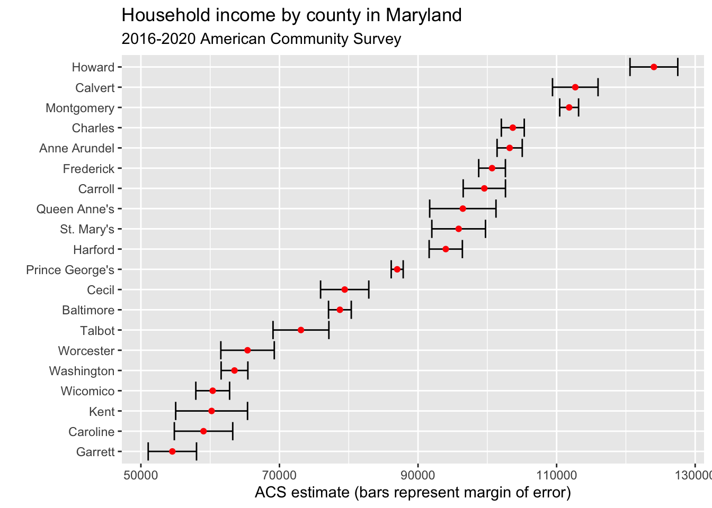

library(tidyverse)
library(tidycensus)Intro to APIs: The Census
There is truly an astonishing amount of data collected by the US Census Bureau. First, there’s the Census that most people know – the every 10 year census. That’s the one mandated by the Constitution where the government attempts to count every person in the US. It’s a mind-boggling feat to even try, and billions get spent on it. That data is used first for determining how many representatives each state gets in Congress. From there, the Census gets used to divide up billions of dollars of federal spending.
To answer the questions the government needs to do that, a ton of data gets collected. That, unfortunately, means the Census is exceedingly complicated to work with. The good news is, the Census has an API – an application programming interface. What that means is we can get data directly through the Census Bureau via calls over the internet.
Let’s demonstrate.
We’re going to use a library called tidycensus which makes calls to the Census API in a very tidy way, and gives you back tidy data. That means we don’t have to go through the process of importing the data from a file. I can’t tell you how amazing this is, speaking from experience. The documentation for this library is here. Another R library for working with Census APIs (there is more than one) is this one from Hannah Recht, a journalist with Kaiser Health News.
First we need to install tidycensus using the console: install.packages("tidycensus", dependencies = TRUE). You also should install the sf and rgdal packages.
To use the API, you need an API key. To get that, you need to apply for an API key with the Census Bureau. It takes a few minutes and you need to activate your key via email. Once you have your key, you need to set that for this session. Just FYI: Your key is your key. Do not share it around.
census_api_key("YOUR KEY HERE", install=TRUE)The two main functions in tidycensus are get_decennial, which retrieves data from the 2000 and 2010 Censuses (and soon the 2020 Census), and get_acs, which pulls data from the American Community Survey, a between-Censuses annual survey that provides estimates, not hard counts, but asks more detailed questions. If you’re new to Census data, there’s a very good set of slides from Kyle Walker, the creator of tidycensus, and he’s working on a book that you can read for free online.
It’s important to keep in mind that Census data represents people - you, your neighbors and total strangers. It also requires some level of definitions, especially about race & ethnicity, that may or may not match how you define yourself or how others define themselves.
So to give you some idea of how complicated the data is, let’s pull up just one file from the decennial Census. We’ll use Summary File 1, or SF1. That has the major population and housing stuff.
sf1 <- load_variables(2010, "sf1", cache = TRUE)
sf1# A tibble: 8,959 × 3
name label concept
<chr> <chr> <chr>
1 H001001 Total HOUSING UNITS
2 H002001 Total URBAN AND RURAL
3 H002002 Total!!Urban URBAN AND RURAL
4 H002003 Total!!Urban!!Inside urbanized areas URBAN AND RURAL
5 H002004 Total!!Urban!!Inside urban clusters URBAN AND RURAL
6 H002005 Total!!Rural URBAN AND RURAL
7 H002006 Total!!Not defined for this file URBAN AND RURAL
8 H003001 Total OCCUPANCY STATUS
9 H003002 Total!!Occupied OCCUPANCY STATUS
10 H003003 Total!!Vacant OCCUPANCY STATUS
# ℹ 8,949 more rowsNote: There are thousands of variables in SF1. That’s not a typo. Open it in your environment by double clicking. As you scroll down, you’ll get an idea of what you’ve got to choose from.
If you think that’s crazy, try the SF3 file from 2000.
sf3 <- load_variables(2000, "sf3", cache = TRUE)
sf3# A tibble: 16,520 × 3
name label concept
<chr> <chr> <chr>
1 H001001 Total HOUSING UNITS [1]
2 H002001 Total UNWEIGHTED SAMPLE HOUSIN…
3 H002002 Total!!Occupied UNWEIGHTED SAMPLE HOUSIN…
4 H002003 Total!!Vacant UNWEIGHTED SAMPLE HOUSIN…
5 H003001 Total 100-PERCENT COUNT OF HOU…
6 H004001 Percent of occupied housing units in sample PERCENT OF HOUSING UNITS…
7 H004002 Percent of vacant housing units in sample PERCENT OF HOUSING UNITS…
8 H005001 Total URBAN AND RURAL [7]
9 H005002 Total!!Urban URBAN AND RURAL [7]
10 H005003 Total!!Urban!!Inside urbanized areas URBAN AND RURAL [7]
# ℹ 16,510 more rowsYes. That’s more than 16,000 variables to choose from. I told you. Astonishing.
So let’s try to answer a question using the Census. What is the fastest growing state since 2000?
To answer this, we need to pull the total population by state in each of the decennial census. Here’s 2000.
p00 <- get_decennial(geography = "state", variables = "P001001", year = 2000)Now 2010.
p10 <- get_decennial(geography = "state", variables = "P001001", year = 2010)Let’s take a peek at 2010.
p10As you can see, we have a GEOID, NAME, then variable and value. Variable and value are going to be the same. Because those are named the same thing, to merge them together, we need to rename them.
p10 |> select(GEOID, NAME, value) |> rename(Population2010=value) -> p2010
p00 |> select(GEOID, NAME, value) |> rename(Population2000=value) -> p2000Now we join the data together.
alldata <- p2000 |> inner_join(p2010)And now we calculate the percent change.
alldata |> mutate(change = ((Population2010-Population2000)/Population2000)*100) |> arrange(desc(change))And just like that: Nevada.
You may be asking: hey, wasn’t there a 2020 Census? Where’s that data? The answer is that it’s coming, slowly - the Census Bureau has a schedule of releases.
The ACS
In 2010, the Census Bureau replaced SF3 with the American Community Survey. The Good News is that the data would be updated on a rolling basis. The bad news is that it’s more complicated because it’s more like survey data with a large sample. That means there’s margins of error and confidence intervals to worry about. By default, using get_acs fetches data from the 5-year estimates (currently 2016-2020), but you can specify 1-year estimates for jurisdictions with at least 65,000 people (many counties and cities).
Here’s an example using the 5-year ACS estimates:
What is Maryland’s richest county?
We can measure this by median household income. That variable is B19013_001, so we can get that data like this (I’m narrowing it to the top 20 for simplicity):
md <- get_acs(geography = "county",
variables = c(medincome = "B19013_001"),
state = "MD",
year = 2020)Getting data from the 2016-2020 5-year ACSmd <- md |> arrange(desc(estimate)) |> top_n(20, estimate)
md# A tibble: 20 × 5
GEOID NAME variable estimate moe
<chr> <chr> <chr> <dbl> <dbl>
1 24027 Howard County, Maryland medincome 124042 3448
2 24009 Calvert County, Maryland medincome 112696 3287
3 24031 Montgomery County, Maryland medincome 111812 1361
4 24017 Charles County, Maryland medincome 103678 1654
5 24003 Anne Arundel County, Maryland medincome 103225 1817
6 24021 Frederick County, Maryland medincome 100685 1927
7 24013 Carroll County, Maryland medincome 99569 3051
8 24035 Queen Anne's County, Maryland medincome 96467 4785
9 24037 St. Mary's County, Maryland medincome 95864 3872
10 24025 Harford County, Maryland medincome 94003 2398
11 24033 Prince George's County, Maryland medincome 86994 865
12 24015 Cecil County, Maryland medincome 79415 3479
13 24005 Baltimore County, Maryland medincome 78724 1641
14 24041 Talbot County, Maryland medincome 73102 4031
15 24047 Worcester County, Maryland medincome 65396 3856
16 24043 Washington County, Maryland medincome 63510 1930
17 24045 Wicomico County, Maryland medincome 60366 2437
18 24029 Kent County, Maryland medincome 60208 5185
19 24011 Caroline County, Maryland medincome 59042 4215
20 24023 Garrett County, Maryland medincome 54542 3487Howard, Calvert, Montgomery, Anne Arundel, Charles. What do they all have in common? Lots of suburban flight from DC and Baltimore. But do the margins of error let us say one county is richer than the other. We can find this out visually using error bars. Don’t worry much about the code here – we’ll cover that soon enough.
md |>
mutate(NAME = gsub(" County, Maryland", "", NAME)) |>
ggplot(aes(x = estimate, y = reorder(NAME, estimate))) +
geom_errorbarh(aes(xmin = estimate - moe, xmax = estimate + moe)) +
geom_point(color = "red") +
labs(title = "Household income by county in Maryland",
subtitle = "2016-2020 American Community Survey",
y = "",
x = "ACS estimate (bars represent margin of error)")Warning: `geom_errobarh()` was deprecated in ggplot2 4.0.0.
ℹ Please use the `orientation` argument of `geom_errorbar()` instead.
As you can see, some of the error bars are quite wide. Some are narrow. But if the bars overlap, it means the difference between the two counties is within the margin of error, and the differences aren’t statistically significant. So is the difference between Calvert and Montgomery significant? Nope. Is the difference between Howard and everyone else significant? Yes it is.
Let’s ask another question of the ACS – did any counties lose income from the time of the global financial crisis to the current 5-year window?
Let’s re-label our first household income data.
md20 <- get_acs(geography = "county",
variables = c(medincome = "B19013_001"),
state = "MD",
year = 2020)Getting data from the 2016-2020 5-year ACSAnd now we grab the 2010 median household income.
md10 <- get_acs(geography = "county",
variables = c(medincome = "B19013_001"),
state = "MD",
year = 2010)Getting data from the 2006-2010 5-year ACSWhat I’m going to do next is a lot, but each step is simple. I’m going to join the data together, so each county has one line of data. Then I’m going to rename some fields that repeat. Then I’m going to calculate the minimium and maximum value of the estimate using the margin of error. That’ll help me later. After that, I’m going to calculate a perent change and sort it by that change.
md10 |>
inner_join(md20, by=c("GEOID", "NAME")) |>
rename(estimate2010=estimate.x, estimate2020=estimate.y) |>
mutate(min2010 = estimate2010-moe.x, max2010 = estimate2010+moe.x, min2020 = estimate2020-moe.y, max2020 = estimate2020+moe.y) |>
select(-variable.x, -variable.y, -moe.x, -moe.y) |>
mutate(change = ((estimate2020-estimate2010)/estimate2010)*100) |>
arrange(change)# A tibble: 24 × 9
GEOID NAME estimate2010 estimate2020 min2010 max2010 min2020 max2020 change
<chr> <chr> <dbl> <dbl> <dbl> <dbl> <dbl> <dbl> <dbl>
1 24011 Carol… 58799 59042 56740 60858 54827 63257 0.413
2 24039 Somer… 42443 44980 39092 45794 40432 49528 5.98
3 24041 Talbo… 63017 73102 60081 65953 69071 77133 16.0
4 24017 Charl… 88825 103678 87268 90382 102024 105332 16.7
5 24019 Dorch… 45151 52799 43470 46832 49020 56578 16.9
6 24047 Worce… 55487 65396 52749 58225 61540 69252 17.9
7 24045 Wicom… 50752 60366 49313 52191 57929 62803 18.9
8 24035 Queen… 81096 96467 78068 84124 91682 101252 19.0
9 24023 Garre… 45760 54542 43729 47791 51055 58029 19.2
10 24031 Montg… 93373 111812 92535 94211 110451 113173 19.7
# ℹ 14 more rowsSo according to this, Somerset and Caroline counties had the smallest change between 2010 and 2020, while all other jurisdictions saw double-digit percentage increases.
But did they?
Look at the min and max values for both. Is the change statistically significant?
The ACS data has lots of variables, just like the decennial Census does. To browse them, you can do this:
v20 <- load_variables(2020, "acs5", cache=TRUE)And then view v20 to see what kinds of variables are available via the API.
“Wide” Results
Although one of the chief strengths of tidycensus is that it offers a, well, tidy display of Census data, it also has the ability to view multiple variables spread across columns. This can be useful for creating percentages and comparing multiple variables.
Sorting Results
You’ll notice that we’ve used arrange to sort the results of tidycensus functions, although that’s done after we create a new variable to hold the data. There’s another way to use arrange that you should know about, one that you can use for exploratory analysis. An example using median household income from 2020:
md20 <- get_acs(geography = "county",
variables = c(medincome = "B19013_001"),
state = "MD",
year = 2020)Getting data from the 2016-2020 5-year ACSarrange(md20, desc(estimate))# A tibble: 24 × 5
GEOID NAME variable estimate moe
<chr> <chr> <chr> <dbl> <dbl>
1 24027 Howard County, Maryland medincome 124042 3448
2 24009 Calvert County, Maryland medincome 112696 3287
3 24031 Montgomery County, Maryland medincome 111812 1361
4 24017 Charles County, Maryland medincome 103678 1654
5 24003 Anne Arundel County, Maryland medincome 103225 1817
6 24021 Frederick County, Maryland medincome 100685 1927
7 24013 Carroll County, Maryland medincome 99569 3051
8 24035 Queen Anne's County, Maryland medincome 96467 4785
9 24037 St. Mary's County, Maryland medincome 95864 3872
10 24025 Harford County, Maryland medincome 94003 2398
# ℹ 14 more rowsIn this case we don’t save the sorted results to a variable, we can just see the output in the console.
Combining with Other Data
Combining Census data with other types of data really unlocks its power for journalism. In this case, we’ll use some 2019-20 data from Maryland high schools, including the number of graduates and the number of students who enrolled in college the next fall semester, plus the percentage. We also have the zip code of the high school, which will enable us to bring in Census data. Let’s load the CSV file and make sure the zip code is a character column, because that’s what we’ll need to join.
md_high_schools <- read_csv("data/md_high_schools.csv") |>
mutate(zip = as.character(zip))Rows: 201 Columns: 7
── Column specification ────────────────────────────────────────────────────────
Delimiter: ","
chr (3): cohort_year, local_school_system, school
dbl (4): zip, high_school_graduates, enrollment, percent_of_high_school_grad...
ℹ Use `spec()` to retrieve the full column specification for this data.
ℹ Specify the column types or set `show_col_types = FALSE` to quiet this message.The Census Bureau has Zip Code Tabulation Areas - they are mostly identical to what we know as zip codes, with some small differences. In most cases we can use them interchangeably. Let’s get ZCTA household income data from the ACS using tidycensus for each zip code in md_high_schools. Run the following codeblock to retrieve household income data for all Maryland ZCTAs first, then join them to md_high_schools using the GEOID column. We’ll also create min and max values and drop any rows where we don’t have income estimates. What’s one question we could ask of this data now that we have enrollment percentages and household income for the high school’s zip code? What might make the answer harder to interpret?
md_zipcodes <- get_acs(geography="zcta", variables = "B19013_001", state='MD', year=2019)Getting data from the 2015-2019 5-year ACSmd_high_schools_with_acs <- md_high_schools |> left_join(md_zipcodes, by=c('zip'='GEOID'))
md_high_schools_with_acs <- md_high_schools_with_acs |> mutate(min=(estimate-moe), max=(estimate+moe)) |> drop_na()Now let’s look at the average household income for high schools that have 60% or more graduates immediately enrolling in college, and then look at those with less than 40%. What do you see here?
md_high_schools_with_acs |>
filter(percent_of_high_school_graduates_enrolled >= 60) |>
summarize(avg_income = mean(estimate), count =n())# A tibble: 1 × 2
avg_income count
<dbl> <int>
1 111448. 50md_high_schools_with_acs |>
filter(percent_of_high_school_graduates_enrolled <= 40) |>
summarize(avg_income = mean(estimate), count = n())# A tibble: 1 × 2
avg_income count
<dbl> <int>
1 69252. 76Joining Census Data with U.S. Religion Census Data
Now that we’ve learned how to work with Census API data, let’s combine it with data from the 2020 U.S. Religion Census. This will let us explore the relationship between demographic characteristics and religious adherence patterns.
The key to joining these datasets is the FIPS code - a standardized geographic identifier used by the Census Bureau. State FIPS codes are 2 digits, and county FIPS codes are 5 digits (state + county).
Let’s start by reading in the U.S. Religion Census data at both the state and county levels:
religion_state <- read_csv("data/usreligioncensus_state_2020.csv")Rows: 51 Columns: 20
── Column specification ────────────────────────────────────────────────────────
Delimiter: ","
chr (7): State Code, State Name, Adherents as % of Population, Largest Body ...
dbl (8): Population Rank, Congregations Rank, Congregations per 100,000 Popu...
num (5): 2020 Population, Congregations, Adherents, # of Congregations, # of...
ℹ Use `spec()` to retrieve the full column specification for this data.
ℹ Specify the column types or set `show_col_types = FALSE` to quiet this message.religion_county <- read_csv("data/usreligioncensus_county_2020.csv")Rows: 3143 Columns: 21
── Column specification ────────────────────────────────────────────────────────
Delimiter: ","
chr (8): FIPS, State Name, County Name, Adherents as % of Population, Large...
dbl (3): Congregations Per 100,000 Population, # of Congregations, Diversit...
num (10): 2020 Population, Population Rank, Congregations, Congregations Ran...
ℹ Use `spec()` to retrieve the full column specification for this data.
ℹ Specify the column types or set `show_col_types = FALSE` to quiet this message.glimpse(religion_state)Rows: 51
Columns: 20
$ `State Code` <chr> "01", "02", "04", "05", "06", "…
$ `State Name` <chr> "Alabama", "Alaska", "Arizona",…
$ `2020 Population` <dbl> 5024279, 733391, 7151502, 30115…
$ `Population Rank` <dbl> 24, 48, 14, 33, 1, 21, 29, 45, …
$ Congregations <dbl> 10756, 1264, 5244, 7428, 23567,…
$ `Congregations Rank` <dbl> 11, 45, 28, 18, 2, 32, 35, 47, …
$ `Congregations per 100,000 Population` <dbl> 214.1, 172.4, 73.3, 246.7, 59.6…
$ `Congregations Per 100,000 Pop. Rank` <dbl> 5, 11, 45, 1, 50, 44, 42, 35, 3…
$ Adherents <dbl> 3195509, 258020, 3151361, 17395…
$ `Adherents Rank` <dbl> 15, 49, 17, 30, 1, 28, 31, 45, …
$ `Adherents as % of Population` <chr> "63.60%", "35.18%", "44.07%", "…
$ `Adherents as % of Population Rank` <dbl> 2, 47, 35, 6, 34, 46, 28, 40, 7…
$ `Largest Body by # of Congregations` <chr> "Southern Baptist Convention", …
$ `# of Congregations` <dbl> 3265, 194, 932, 1551, 2323, 568…
$ `% of All Congregations` <chr> "30.4%", "15.3%", "17.8%", "20.…
$ `Largest Body by # of Adherents` <chr> "Southern Baptist Convention", …
$ `# of Adherents` <dbl> 1255396, 73930, 1522410, 607751…
$ `% of All Adherents` <chr> "39.3%", "28.7%", "48.3%", "34.…
$ `Diversity Index Value` <dbl> 0.6776, 0.5413, 0.6261, 0.6649,…
$ `Diversity Index Value Rank` <dbl> 9, 47, 32, 16, 33, 45, 31, 37, …glimpse(religion_county)Rows: 3,143
Columns: 21
$ FIPS <chr> "01001", "01003", "01005", "010…
$ `State Name` <chr> "Alabama", "Alabama", "Alabama"…
$ `County Name` <chr> "Autauga County", "Baldwin Coun…
$ `2020 Population` <dbl> 58805, 231767, 25223, 22293, 59…
$ `Population Rank` <dbl> 886, 296, 1595, 1699, 882, 2385…
$ Congregations <dbl> 110, 285, 93, 81, 145, 43, 89, …
$ `Congregations Rank` <dbl> 804, 236, 972, 1134, 556, 1908,…
$ `Congregations Per 100,000 Population` <dbl> 187.1, 123.0, 368.7, 363.3, 245…
$ `Congregations Per 100,000 Pop. Rank` <dbl> 1825, 2478, 524, 543, 1317, 344…
$ Adherents <dbl> 30249, 124351, 17330, 10887, 33…
$ `Adherents Rank` <dbl> 825, 264, 1249, 1675, 747, 2368…
$ `Adherents as % of Population` <chr> "51.44%", "53.65%", "68.71%", "…
$ `Adherents as % of Population Rank` <dbl> 1273, 1111, 409, 1472, 912, 160…
$ `Largest Body by # of Congregations` <chr> "Southern Baptist Convention", …
$ `# of Congregations` <dbl> 34, 68, 25, 42, 74, 10, 36, 88,…
$ `% of All Congregations` <chr> "30.9%", "23.9%", "26.9%", "51.…
$ `Largest Body by # of Adherents` <chr> "Southern Baptist Convention", …
$ `# of Adherents` <dbl> 17115, 37107, 4884, 8003, 23602…
$ `% of All Adherents` <chr> "56.6%", "29.8%", "28.2%", "73.…
$ `Diversity Index Value` <dbl> 0.5943, 0.6756, 0.7306, 0.5428,…
$ `Diversity Index Value Rank` <dbl> 1597, 539, 92, 2234, 1696, 1058…Notice that the state data has a “State Code” column (FIPS code) and the county data has a “FIPS” column (5-digit county FIPS). These are the keys we’ll use to join with Census data.
State-Level Analysis
Let’s get state-level population data from the 2020 Census and join it with the religion census data to explore which states have the highest percentage of religious adherents.
# Get 2020 state population from Census
state_pop_2020 <- get_decennial(
geography = "state",
variables = "P1_001N", # Total population
year = 2020
)Getting data from the 2020 decennial CensusUsing the PL 94-171 Redistricting Data Summary FileNote: 2020 decennial Census data use differential privacy, a technique that
introduces errors into data to preserve respondent confidentiality.
ℹ Small counts should be interpreted with caution.
ℹ See https://www.census.gov/library/fact-sheets/2021/protecting-the-confidentiality-of-the-2020-census-redistricting-data.html for additional guidance.
This message is displayed once per session.# Clean the religion data and prepare for joining
religion_state_clean <- religion_state |>
# Make sure State Code is character for joining
mutate(`State Code` = as.character(`State Code`)) |>
# Pad single-digit state codes with leading zero
mutate(`State Code` = str_pad(`State Code`, width = 2, pad = "0"))
# Join the datasets
state_religion_combined <- state_pop_2020 |>
inner_join(religion_state_clean, by = c("GEOID" = "State Code"))
# View the combined data
state_religion_combined |>
select(NAME, value, `State Name`, Adherents, `Adherents as % of Population`, `Diversity Index Value`) |>
arrange(desc(`Adherents as % of Population`))# A tibble: 51 × 6
NAME value `State Name` Adherents Adherents as % of Po…¹
<chr> <dbl> <chr> <dbl> <chr>
1 Utah 3271616 Utah 2489571 76.10%
2 Alabama 5024279 Alabama 3195509 63.60%
3 Louisiana 4657757 Louisiana 2949420 63.32%
4 Oklahoma 3959353 Oklahoma 2422123 61.17%
5 Mississippi 2961279 Mississippi 1759935 59.43%
6 Arkansas 3011524 Arkansas 1739575 57.76%
7 District of Columbia 689545 District Of C… 389241 56.45%
8 Tennessee 6910840 Tennessee 3844957 55.64%
9 South Dakota 886667 South Dakota 491026 55.38%
10 Texas 29145505 Texas 16045479 55.05%
# ℹ 41 more rows
# ℹ abbreviated name: ¹`Adherents as % of Population`
# ℹ 1 more variable: `Diversity Index Value` <dbl>The U.S. Religion Census calculates a diversity index that measures how religiously diverse each state is. Let’s examine religious diversity by state to see if there are any patterns:
# Most diverse states
state_religion_combined |>
select(NAME, value, `Diversity Index Value`, Adherents, `Adherents as % of Population`) |>
arrange(desc(`Diversity Index Value`)) |>
head(10)# A tibble: 10 × 5
NAME value Diversity Index Valu…¹ Adherents Adherents as % of Po…²
<chr> <dbl> <dbl> <dbl> <chr>
1 District of C… 6.90e5 0.751 389241 56.45%
2 Louisiana 4.66e6 0.727 2949420 63.32%
3 South Dakota 8.87e5 0.705 491026 55.38%
4 Texas 2.91e7 0.699 16045479 55.05%
5 North Dakota 7.79e5 0.697 428647 55.02%
6 Idaho 1.84e6 0.685 969901 52.74%
7 North Carolina 1.04e7 0.683 5443737 52.15%
8 Illinois 1.28e7 0.681 6510363 50.81%
9 Alabama 5.02e6 0.678 3195509 63.60%
10 South Carolina 5.12e6 0.677 2695900 52.67%
# ℹ abbreviated names: ¹`Diversity Index Value`,
# ²`Adherents as % of Population`# Compare to least diverse
state_religion_combined |>
select(NAME, value, `Diversity Index Value`, Adherents, `Adherents as % of Population`) |>
arrange(`Diversity Index Value`) |>
head(10)# A tibble: 10 × 5
NAME value Diversity Index Valu…¹ Adherents Adherents as % of Po…²
<chr> <dbl> <dbl> <dbl> <chr>
1 New Hampshire 1377529 0.441 374948 27.22%
2 Maine 1362359 0.489 419523 30.79%
3 Utah 3271616 0.516 2489571 76.10%
4 Oregon 4237256 0.522 1405973 33.18%
5 Alaska 733391 0.541 258020 35.18%
6 Montana 1084225 0.542 377713 34.84%
7 Colorado 5773714 0.544 2044440 35.41%
8 Vermont 643077 0.559 242017 37.63%
9 West Virginia 1793716 0.566 677633 37.78%
10 Nevada 3104614 0.590 1291778 41.61%
# ℹ abbreviated names: ¹`Diversity Index Value`,
# ²`Adherents as % of Population`County-Level Analysis: Maryland Example
Now let’s work with county-level data to explore Maryland counties specifically. We’ll join ACS income data with religion census data to see if there’s a relationship between median household income and religious adherence.
# Get Maryland county median income
md_income <- get_acs(
geography = "county",
variables = c(medincome = "B19013_001"),
state = "MD",
year = 2021
)Getting data from the 2017-2021 5-year ACS# Filter religion data for Maryland counties only
md_religion <- religion_county |>
filter(`State Name` == "Maryland") |>
mutate(FIPS = as.character(FIPS))
# Join the data
md_combined <- md_income |>
inner_join(md_religion, by = c("GEOID" = "FIPS"))
# Examine the relationship between income and religious adherence
md_combined |>
select(NAME, estimate, `County Name`, `Adherents as % of Population`, `Diversity Index Value`, Congregations) |>
arrange(desc(estimate))# A tibble: 24 × 6
NAME estimate `County Name` Adherents as % of Po…¹ Diversity Index Valu…²
<chr> <dbl> <chr> <chr> <dbl>
1 Howard … 129549 Howard County 43.10% 0.628
2 Calvert… 120295 Calvert Coun… 41.19% 0.594
3 Montgom… 117345 Montgomery C… 53.42% 0.693
4 Anne Ar… 108048 Anne Arundel… 33.86% 0.528
5 Charles… 107808 Charles Coun… 39.86% 0.581
6 Frederi… 106129 Frederick Co… 36.68% 0.565
7 Carroll… 104708 Carroll Coun… 39.79% 0.592
8 St. Mar… 102859 St. Mary's C… 44.32% 0.622
9 Queen A… 99597 Queen Anne's… 40.91% 0.594
10 Harford… 98495 Harford Coun… 34.98% 0.541
# ℹ 14 more rows
# ℹ abbreviated names: ¹`Adherents as % of Population`,
# ²`Diversity Index Value`
# ℹ 1 more variable: Congregations <dbl>We can dig deeper into the Maryland data by looking at which counties have the most religious diversity and how that relates to other characteristics:
# Most diverse Maryland counties
md_combined |>
select(NAME, estimate, `Diversity Index Value`, `Adherents as % of Population`, `Largest Body by # of Adherents`) |>
arrange(desc(`Diversity Index Value`)) |>
head(10)# A tibble: 10 × 5
NAME estimate Diversity Index Valu…¹ Adherents as % of Po…²
<chr> <dbl> <dbl> <chr>
1 Worcester County, Mar… 71262 0.752 63.92%
2 Baltimore city, Maryl… 54124 0.714 51.33%
3 Prince George's Count… 91124 0.701 50.04%
4 Montgomery County, Ma… 117345 0.693 53.42%
5 Talbot County, Maryla… 79349 0.678 49.65%
6 Howard County, Maryla… 129549 0.628 43.10%
7 St. Mary's County, Ma… 102859 0.622 44.32%
8 Allegany County, Mary… 51090 0.601 40.88%
9 Wicomico County, Mary… 63610 0.601 40.36%
10 Calvert County, Maryl… 120295 0.594 41.19%
# ℹ abbreviated names: ¹`Diversity Index Value`,
# ²`Adherents as % of Population`
# ℹ 1 more variable: `Largest Body by # of Adherents` <chr># Least diverse Maryland counties
md_combined |>
select(NAME, estimate, `Diversity Index Value`, `Adherents as % of Population`, `Largest Body by # of Adherents`) |>
arrange(`Diversity Index Value`) |>
head(10)# A tibble: 10 × 5
NAME estimate Diversity Index Valu…¹ Adherents as % of Po…²
<chr> <dbl> <dbl> <chr>
1 Somerset County, Mary… 48661 0.382 22.59%
2 Cecil County, Maryland 81817 0.485 29.81%
3 Anne Arundel County, … 108048 0.528 33.86%
4 Harford County, Maryl… 98495 0.541 34.98%
5 Dorchester County, Ma… 55652 0.544 35.62%
6 Baltimore County, Mar… 81846 0.548 34.66%
7 Caroline County, Mary… 63027 0.550 35.55%
8 Garrett County, Maryl… 58011 0.556 37.75%
9 Frederick County, Mar… 106129 0.565 36.68%
10 Washington County, Ma… 67349 0.569 37.97%
# ℹ abbreviated names: ¹`Diversity Index Value`,
# ²`Adherents as % of Population`
# ℹ 1 more variable: `Largest Body by # of Adherents` <chr># Calculate correlation between income and diversity
md_combined |>
summarize(
correlation = cor(estimate, `Diversity Index Value`, use = "complete.obs")
)# A tibble: 1 × 1
correlation
<dbl>
1 0.189Exploring Congregations Per Capita
Let’s explore whether wealthier counties have more or fewer congregations per capita:
md_combined |>
select(NAME, estimate, `Congregations Per 100,000 Population`, `Adherents as % of Population`) |>
arrange(desc(`Congregations Per 100,000 Population`)) |>
head(10)# A tibble: 10 × 4
NAME estimate Congregations Per 10…¹ Adherents as % of Po…²
<chr> <dbl> <dbl> <chr>
1 Garrett County, Maryl… 58011 333. 37.75%
2 Kent County, Maryland 64451 250 38.95%
3 Dorchester County, Ma… 55652 249 35.62%
4 Worcester County, Mar… 71262 214. 63.92%
5 Allegany County, Mary… 51090 213. 40.88%
6 Somerset County, Mary… 48661 199 22.59%
7 Talbot County, Maryla… 79349 181. 49.65%
8 Caroline County, Mary… 63027 180. 35.55%
9 Wicomico County, Mary… 63610 156. 40.36%
10 Washington County, Ma… 67349 150 37.97%
# ℹ abbreviated names: ¹`Congregations Per 100,000 Population`,
# ²`Adherents as % of Population`# Look at correlation
md_combined |>
summarize(
correlation = cor(estimate, `Congregations Per 100,000 Population`, use = "complete.obs")
)# A tibble: 1 × 1
correlation
<dbl>
1 -0.778Comparing Across States with Income Data
Finally, let’s use what we’ve learned to compare religious characteristics across states. We’ll get ACS data for median household income by state and join it with the religion census data:
# Get state median household income
state_income <- get_acs(
geography = "state",
variables = c(medincome = "B19013_001"),
year = 2021
)Getting data from the 2017-2021 5-year ACS# Join with religion data
state_combined_full <- state_income |>
inner_join(religion_state_clean, by = c("GEOID" = "State Code"))
# High adherence, lower income
state_combined_full |>
filter(`Adherents as % of Population` >= "60%") |>
select(NAME, estimate, `Adherents as % of Population`, `Diversity Index Value`, `Largest Body by # of Adherents`) |>
arrange(estimate) |>
head(10)# A tibble: 4 × 5
NAME estimate `Adherents as % of Population` `Diversity Index Value`
<chr> <dbl> <chr> <dbl>
1 Louisiana 53571 63.32% 0.727
2 Alabama 54943 63.60% 0.678
3 Oklahoma 56956 61.17% 0.663
4 Utah 79133 76.10% 0.516
# ℹ 1 more variable: `Largest Body by # of Adherents` <chr># High income, lower adherence
state_combined_full |>
filter(`Adherents as % of Population` <= "40%") |>
select(NAME, estimate, `Adherents as % of Population`, `Diversity Index Value`) |>
arrange(desc(estimate)) |>
head(10)# A tibble: 10 × 4
NAME estimate `Adherents as % of Population` `Diversity Index Value`
<chr> <dbl> <chr> <dbl>
1 New Hampshire 83449 27.22% 0.441
2 Alaska 80287 35.18% 0.541
3 Colorado 80184 35.41% 0.544
4 Oregon 70084 33.18% 0.522
5 Wyoming 68002 40.39% 0.602
6 Vermont 67674 37.63% 0.559
7 Michigan 63202 39.68% 0.596
8 Maine 63182 30.79% 0.489
9 Montana 60560 34.84% 0.542
10 West Virginia 50884 37.78% 0.566This combination of Census demographic data with U.S. Religion Census data opens up many possibilities for analyzing the relationship between community characteristics and religious patterns. The FIPS code system makes it straightforward to join these datasets at both state and county levels, allowing for rich comparative analysis.